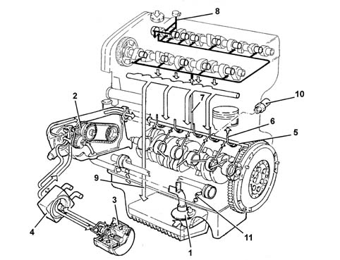

Composition
- Path
- Descriptions > 10 ENGINE > 1084 ENGINE LUBRICATION > Composition
- Kind
- system description
- Applies to
- engines: 2.4 20V; all production periods
- Interactive page
- https://sloeber94.github.io/elrnDB-lThss/en/#/606756
Applies to: engines: 2.4 20V; all production periods
STRUCTURE
The engine lubrication system is shown below.

- 1 - Suction head with filter mesh.
- 2 - Oil pump.
- 3 - Oil filter cartridge.
- 4 - Engine oil heat exchanger.
- 5 - Main longitudinal channel.
- 6 - Sprays.
- 7 - Vertical channel (camshaft mounting lubrication).
- 9 - Variable valve timing actuation channels.
- 9 - Oil falling back into sump.
- 10 - Switch for engine oil pressure warning light.
- 11 - Counter-rotating shaft channel.